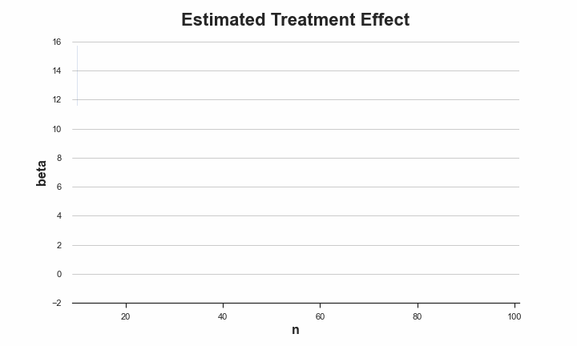

A/B Tests, Privacy and Online Regression

How to run experiments without storing individual data
AB tests, a.k.a. randomized controlled trials, are widely recognized as the gold standard technique to compute the causal effect of a treatment (a drug, ad, product, …) on an outcome of interest (a disease, firm revenue, customer satisfaction, …). We randomly split a set of subjects (patients, users, customers, …) into a treatment and a control group and give the treatment to the treatment group. This procedure ensures that ex-ante, the only expected difference between the two groups is caused by the treatment.
One potential privacy concern is that one needs to store data about many users for the whole duration of the experiment in order to estimate the effect of the treatment. This is not a problem if we can run the experiment instantaneusly, but can become an issue when the experiment duration is long. In this post, we are going to explore one solution to this problem: online regression. We will see how to estimate (conditional) average treatment effects and how to do inference, using both asymptotic approximations and bootstrapping.
⚠️ Some parts are algebra-intense, but you can skip them if you are only interested in the intuition.
Credit Cards and Donations
Suppose, for example, that we were a fin-tech company. We have designed a new user interface (UI) for our mobile application and we would like to understand whether it slows down our transaction. In order to estimate the causal effect of the new UI on transaction speed, we plan to run an A/B test or randomized controlled trial.
We have one major problem: we should not store user-level information for privacy reasons.
First, let’s have a look at the data. I import the data generating process dgp_credit() from src.dgp and some plotting functions and libraries from src.utils. I include code snippets from Deepnote, a Jupyter-like web-based collaborative notebook environment. For our purpose, Deepnote is very handy because it allows me not only to include code but also output, like data and tables.
%matplotlib inline
%config InlineBackend.figure_format = 'retina'
from src.utils import *
from src.dgp import dgp_credit
I first generate the whole dataset in one-shot. We will then investigate how to perform the experimental analysis in case the data was arriving dynamically.
def generate_data(self, N=100, seed=0):
np.random.seed(seed)
# Connection speed
connection = np.random.lognormal(3, 1, N)
# Treatment assignment
treated = np.random.binomial(1, 0.5, N)
# Transfer speed
#spend = np.minimum(np.random.lognormal(1 + treated + 0.1*np.sqrt(balance), 2, N), balance)
speed = np.minimum(np.random.exponential(10 + 4*treated - 0.5*np.sqrt(connection), N), connection)
# Generate the dataframe
df = pd.DataFrame({'c': [1]*N, 'treated': treated,
'connection': np.round(connection,2),
'speed': np.round(speed,2)})
return df
N = 100
df = generate_data(N)
df.head()
| c | treated | connection | speed | |
|---|---|---|---|---|
| 0 | 1 | 0 | 117.22 | 0.94 |
| 1 | 1 | 1 | 29.97 | 29.97 |
| 2 | 1 | 0 | 53.45 | 7.38 |
| 3 | 1 | 0 | 188.84 | 0.76 |
| 4 | 1 | 1 | 130.00 | 24.44 |
We have information on 100 users, for whom we observe…
First, let’s have a look
model = smf.ols('speed ~ treated + connection', data=df).fit()
model.summary().tables[1]
| coef | std err | t | P>|t| | [0.025 | 0.975] | |
|---|---|---|---|---|---|---|
| Intercept | 6.0740 | 1.079 | 5.630 | 0.000 | 3.933 | 8.215 |
| treated | 1.3939 | 1.297 | 1.075 | 0.285 | -1.180 | 3.968 |
| connection | -0.0033 | 0.017 | -0.197 | 0.844 | -0.037 | 0.030 |
In order to understand how we can make linear regression one data point at the time, we first need a brief linear algebra recap.
First of all, let’s define $y$ the dependent variable, spend in our case, and $X$ the explanatory variable, the treated indicator, the account balance and a constant.
def xy_from_df(df, r0, r1):
return df.iloc[r0:r1,:3].to_numpy(), df.iloc[r0:r1,3].to_numpy()
The estimator is given by $$ \hat{\beta}_{OLS} = (X’X)^{-1}X’y $$
from numpy.linalg import inv
X, Y = xy_from_df(df, 0, 100)
inv(X.T @ X) @ X.T @ Y
array([ 6.07404291e+00, 1.39385101e+00, -3.33599131e-03])
We get indeed the same exact number as with the smf.ols command!
Can we compute $\beta$ one observation at the time?
The answer is yes! Assume we had $n$ observations and we just received the $n+1$th observation: the pair $(x_{n+1}, y_{n+1})$. In order to compute $\hat{\beta}_{n+1}$ we need to have stored only two objects in memory
- $\hat{\beta}_{n}$, the previous estimate of $\beta$
- $(X_n’ X_n)^{-1}$, the previous value of $(X’ X)^{-1}$
First of all, how do we update $(X’ X)^{-1}$? $$ \begin{align*} (X_{n+1}’ X_{n+1})^{-1} = (X_n’ X_n)^{-1} - \frac{(X_n’ X_n)^{-1} x_{n+1} x_{n+1}’ (X_n’ X_n)^{-1}}{1 + x_{n+1}’ (X_n’ X_n)^{-1} x_{n+1}} \end{align*} $$
After having updated $(X’ X)^{-1}$, we can update $\hat{\beta}$. $$ \hat{\beta}{n+1} = \hat{\beta}{n} + (X_n’ X_n)^{-1} x_{n} (y_n - x_n’ \hat{\beta}_{n}) $$
Note that this procedure is not only privacy friendly but also memory-friendly. Our dataset is a $100 \times 4$ matrix while $(X’ X)^{-1}$ is $3 \times 3$ matrix and $\beta$ is a $3 \times 1$ matrix. We are storing only 12 numbers instead of up to 400!
def update_xb(XiX, beta, x, y):
XiX -= (XiX @ x.T @ x @ XiX) / (1 + x @ XiX @ x.T )
beta += XiX @ x.T @ (y - x @ beta)
return XiX, beta
We are now ready to estimate our OLS coefficient, one data point at the time. However, we cannot really start from the first observation, because we would be unable to invert the matrix $X’X$. We need at least $k+1$ observations, where $k$ is the number of variables in $X$.
Let’s use a warm start of 10 observations to be safe.
# Initialize XiX and beta from first 10 observations
x, y = xy_from_df(df, 0, 10)
XiX = inv(x.T @ x)
beta = XiX @ x.T @ y
# Update estimate live
for n in range(10, N):
x, y = xy_from_df(df, n, n+1)
XiX, beta = update_xb(XiX, beta, x, y)
# Print result
print(beta)
[ 6.07404291e+00 1.39385101e+00 -3.33599131e-03]
We got exactly the same coefficient! Nice!
How did we get there? We can plot the evolution of out estimate $\hat{\beta}$ as we accumulate data. The dynamic plotting function is a bit more cumbersome, but you can find it in src.figures.
from src.figures import online_regression
online_regression(df, "fig/online_reg1.gif")

As we can see, as the number of data points increases, the estimate seems to less and less volatile.
But is it really the case? As usual, we are not just interested in the point estimate of the effect of the coupon on spending, we would also like to understand how precise this estimate is.
Inference
We have seen how to estimate the treatment effect “online”: one observation at the time. Can we also compute the variance of the estimator in the same manner?
First of all, let’s review what the variance of the OLS estimator looks like. Under baseline assumptions, the variance of the OLS estimator is given by: $$ \text{Var}(\hat{\beta}_{OLS}) = (X’X)^{-1} \hat{\sigma}^2 $$
where $\hat{\sigma}^2$ is the variance of the residuals $e = (y - X’\hat{\beta})$.
The regression table reports the standard errors of the coefficients, which are the squared elements on the diagonal of $\text{Var}(\hat{\beta})$.
model.summary().tables[1]
| coef | std err | t | P>|t| | [0.025 | 0.975] | |
|---|---|---|---|---|---|---|
| Intercept | 6.0740 | 1.079 | 5.630 | 0.000 | 3.933 | 8.215 |
| treated | 1.3939 | 1.297 | 1.075 | 0.285 | -1.180 | 3.968 |
| connection | -0.0033 | 0.017 | -0.197 | 0.844 | -0.037 | 0.030 |
Let’s check that we would obtain the same numbers using matrix algebra.
beta = inv(X.T @ X) @ X.T @ Y
np.sqrt(np.diag(inv(X.T @ X) * np.var(Y - X @ beta)))
array([1.06261376, 1.27718352, 0.01669716])
Indeed, we get exactly the same numbers!
We already have a method to part of $\text{Var}(\hat{\beta}{OLS})$ online: $(X’X)^{-1}$ update the matrix $(X’X)^{-1}$ online. How do we update $\hat{\sigma}^2$? This is the formula to update the sum of squared residuals $S$. $$ S{n+1} = S_{n} + \frac{(y_{n+1} - x_{n+1}\hat{\beta}n)}{1 + x{n+1}’ (X_n’ X_n)^{-1} x_{n+1}} $$
def update_xbs(XiX, beta, S, x, y):
S += (y - x @ beta)**2 / (1 + x @ XiX @ x.T )
XiX -= (XiX @ x.T @ x @ XiX) / (1 + x @ XiX @ x.T )
beta += XiX @ x.T @ (y - x @ beta)
return XiX, beta, S[0,0]
Note, the order here is very important!
# Inizialize XiX, beta, and sigma from the first 10 observations
x, y = xy_from_df(df, 0, 10)
XiX = inv(x.T @ x)
beta = XiX @ x.T @ y
S = np.sum((y - x @ beta)**2)
# Update XiX, beta, and sigma online
for n in range(10, N):
x, y = xy_from_df(df, n, n+1)
XiX, beta, S = update_xbs(XiX, beta, S, x, y)
# Print result
print(np.sqrt(np.diag(XiX * S / (N - 3))))
[1.0789208 1.29678338 0.0169534 ]
We indeed got the same result! Note that to get from the sum of squared residuals $S$ to the residuals variance $\hat{\sigma}^2$ we need to divide by the degrees of freedom: $n - k = 100 - 3$.
As before we have plotted the evolution of the estimate of the OLS coefficient over time, we can now augment that plot with a confidence band of +- one standard deviation.
online_regression(df, "fig/online_reg2.gif", ci=True)
As we can see, the estimated variance of the OLS estimator indeed decreases as the sample size increases.
Bootstrap
So far we have used the asymptotic assumptions behind the Central Limit Theorem to compute the standard errors of the estimator. However, we have a particularly small sample. We further check the empirical distribution of the model residuals.
sns.histplot(model.resid, bins=30);
The residuals seem to be particularly skewed! This might be a problem in such a small sample.
One alternative is the bootstrap. Instead of relying on asymptotics, we approximate the distribution of our estimator by resampling our dataset with replacement. Can we bootstrap online?
The answer is once again yes! They key is to weight each observation with an integer weight drawn from a Poisson distribution with mean (and variance) equal to 1. We repeat this process multiple times, in parallel and then we
The updating rules for $(X’X)^{-1}$ and $\hat{beta}$ become the following. $$ \begin{align*} (X_{n+1}’ X_{n+1})^{-1} = (X_n’ X_n)^{-1} - \frac{w (X_n’ X_n)^{-1} x_{n+1} x_{n+1}’ (X_n’ X_n)^{-1}}{1 + w x_{n+1}’ (X_n’ X_n)^{-1} x_{n+1}} \end{align*} $$
and $$ \hat{\beta}{n+1} = \hat{\beta}{n} + w (X_n’ X_n)^{-1} x_{n} (y_n - x_n’ \hat{\beta}_{n}) $$
where $w$ are Poisson weights. First, let’s update the updating function for $(X’X)^{-1}$ and $\hat{beta}$.
def update_xbw(XiX, beta, w, x, y):
XiX -= (w * XiX @ x.T @ x @ XiX) / (1 + w * x @ XiX @ x.T )
beta += w * XiX @ x.T @ (y - x @ beta)
return XiX, beta
We can now run the online estimation. We bootstrap 1000 different estimates of $\hat{\beta}$.
# Inizialize a vector of XiXs and betas
np.random.seed(0)
K = 1000
x, y = xy_from_df(df, 0, 10)
XiXs = [inv(x.T @ x) for k in range(K)]
betas = [xix @ x.T @ y for xix in XiXs]
# Update the vector of XiXs and betas online
for n in range(10, N):
x, y = xy_from_df(df, n, n+1)
for k in range(K):
w = np.random.poisson(1)
XiXs[k], betas[k] = update_xbw(XiXs[k], betas[k], w, x, y)
We can compute the estimated standard deviation of the treatment effect, simply by computing the standard deviation of the vector of bootstrapped coefficients.
np.std(betas, axis=0)
array([0.95301002, 1.14186364, 0.01207962])
The estimated standard errors are slightly different from the previous values of $[1.275, 1.532, 0.020]$, but not very far apart.
Lastly, some of you might have wondered “why sampling discrete weights and not continuous ones?”. Indeed, we can. This procedure is called the Bayesian Bootstrap and you can find a more detailed explanation here.
Conclusion
In this post, we have seen hot to run an experiment without storing individual-level data. How are we able to do it? In order to compute the average treatment effect, we do not need every single observation but it’s sufficient to store just a more compact representation of it.
References
[1] W. Chou, Randomized Controlled Trials without Data Retention (2021), Working Paper.
Related Articles
Code
You can find the original Jupyter Notebook here:
https://github.com/matteocourthoud/Blog-Posts/blob/main/notebooks/online_reg.ipynb
I hold a PhD in economics from the University of Zurich. Now I work at the intersection of economics, data science and statistics. I regularly write about causal inference on Medium.